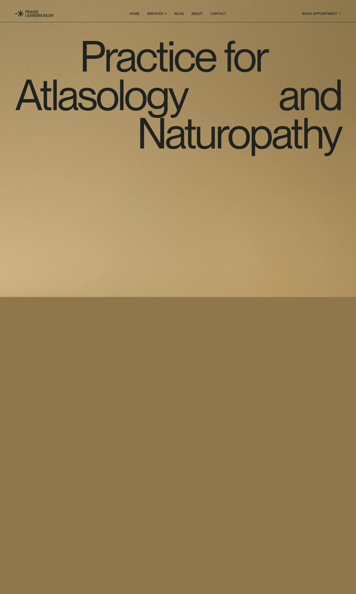

Leandra-isler 的 Design.md 主题展示，围绕编辑/机构、浅色界面、AI、高级质感组织页面。
Explore Leandra-isler's light Other design system: Amber Canvas #f4e6cd, Pale Ochre #edddc3 colors, PP Neue Montreal typography, and DESIGN.md for AI agents.

#f4e6cd: #f4e6cd#edddc3: #edddc3#1e211e: #1e211e#888151: #888151#000000: #000000#b59866: #b59866#a29a65: #a29a65#8ed59a: #8ed59a#8f774b: #8f774b#ffffff: #ffffff#f7f5ee: #f7f5ee#ece9df: #ece9dfdisplay: Interbody: Intermono: ui-monospacehints: Inter,ui-monospace